Academics
Senior
I am a fourth year student expected to graduate Spring of 2019
Louisiana Tech University
LA Tech is an accredited university in Ruston, Louisiana
3.97 GPA
I am a dedicated student with a strong knowledge of physics, math, computer science, and engineering
Cyber Engineer
A cross disciplinary curriculum between Electrical Engineering and Computer Science
Mathematics Minor
Mathematics is a deep passion of mine about which I am constantly trying to obtain knowledge
Research
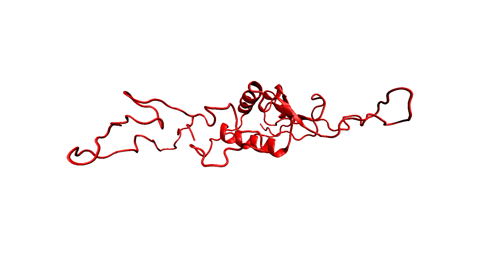
Brain-specific HIV Nef
I developed molecular dynamics scripts for a bioinformatics company called BioInfoExperts which needed help for a study on HIV Associated Neurological Disorders. I started creating scripts to submit primary sequences of Nef proteins into the I-TASSER server and download the resulting estimated 3D structure. Then, I set up a pipeline to run my own TCL scripts on these structures which ionized and hydrated the protein and then ran a NAMD molecular simulation over the resulting ionized complex. The rest of the team from BioInfoExperts extracted features from both the 3D structure and the 1D sequence of the protein and used them in an evolved neural network. The final classifier, which separated brain from non-brain Nef sequences, had a test accuracy of 84.3%. Feature selection was also performed by the team to provide insight into differences between Nef sequences located in the brain versus sequences taken elsewhere. This work was eventually published in the Journal of Neurovirology.
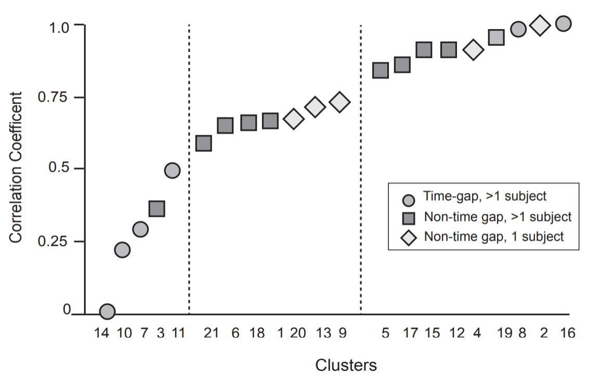
Genetic Variation of HCV
I worked with Rebecca Rose of BioInfoExperts on a study of drug users with HCV. She was using maximum-likelihood phylogenies to assess evolutionary relationships among the samples gathered. Based on the analysis, HCV infections seemed to have extremely variable mutation rates. However, a control was needed to confirm these results. I created software to mutate samples in the population according to a molecular clock. The program automatically replicated meta-data from the population (like patient ID and dates) and recreated the dataset as if a standard, constant mutation rate drove the virus mutations. The simulated dataset that my program output was put through the same pipeline as the real dataset. Then, a comparison could be made between the real behavior of the virus and the behavior of the virus assuming that it mutated according to a molecular clock. This work is currently being reviewed after submission to Infection, Genetics, and Evolution.
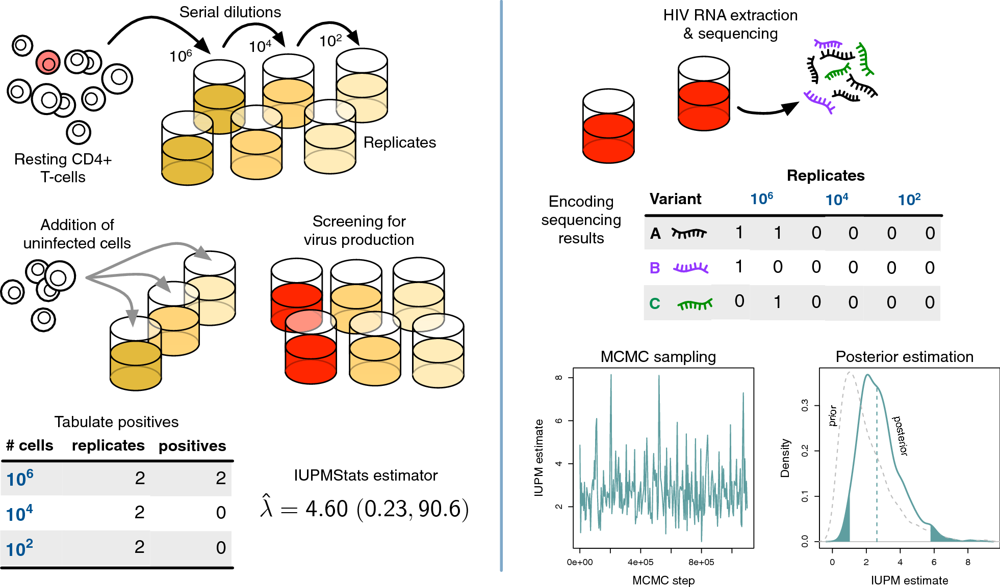
HIV VOAs
BioInfoExperts was contracted to help with a project on quantifying the latent HIV reservoir using sequence diversity. Viral Outgrowth Assays (VOAs) separate T-cells into separate wells and then activates them so that latently infected cells will begin producing the virus. However, sometimes multiple infected cells can end up in the same well. I wrote a script to help researchers decide which wells had a single prominent sequence. The script would take in the raw reads for each well, along with meta-data from the Illumina run stored in a spreadsheet. Then, it would calculate prominence for each of the sequences, compare this to the data from the spreadsheet, and would count sequences passing user-defined thresholds. The prominent sequences were saved and aligned to a reference genome. Phylogenetic trees were calculated for these sequences and returned to the user. The paper utilizing this work was published in the Journal for Retrovirology.
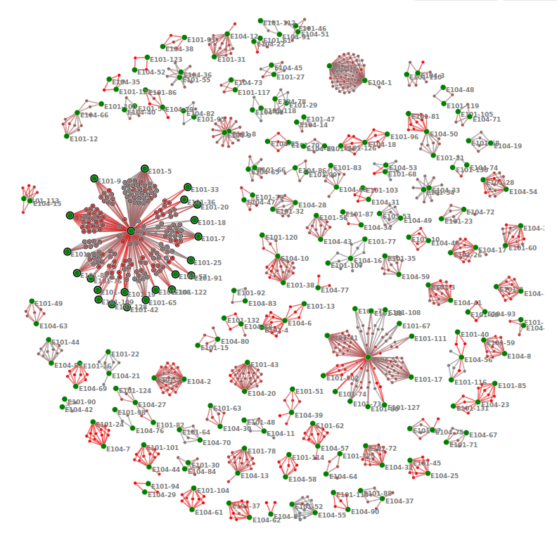
FoxSeq
I developed cluster visualization software for MRSA infections under BioInfoExperts. The program takes a FASTA list of HPV sequences and finds the TN93 distance between each sequence. The program clusters these sequences using various techniques like spectral, hierarchical, and k-means. The program then provides an easy-to-use interactive environment for a researcher to visually determine how sequences are connected. You can group the sequences by any class you want (city, infection vector, etc) so you can see how this meta data affects the distances between sequences. You also have options to batch and reduce your data on the fly so that large datasets are both easy for a human to visualize and easy for a computer to render. You can view multiple cluster thresholds at once so that you can determine roughly the degree to which the sequences cluster. I am currently working on creating an Amazon Web Service server for the software which takes raw MRSA WGS reads from an Illumina sequencing machine, cleans them up and aligns them to a reference genome using Trimmomatic and Bowtie, finds SNPs and indels using GATK, and then compiles them into a FASTA file which can be fed to the cluster visualization software I previously built.
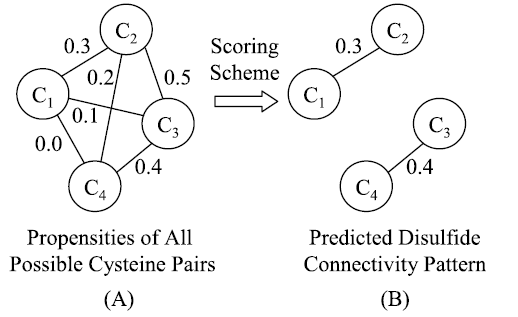
Predicting Disulfide Bond Patterns
I paired up with John Mapes, a PhD student from LA Tech, to use machine learning to predict disulfide bond connectivity patterns. Predicting this pattern of disulfide bonds makes calculating protein folding easier. We created a new feature called the Local Similarity Matrix (LSM), a modification of the position specific scoring matrix (PSSM) in which we normalize the row entries and multiply the probabilities by the corresponding entry in the BLOSUM62’s diagonal. The LSM and various other features were plugged into a machine learning algorithm which outputs a confidence score for each potentially bonding pair of cysteines. Edmond-Gabow’s algorithm was then applied to the weighted graph to get a prediction for the most likely bonding pattern. We scored around 5 percent higher than other prior works on a variety of datasets. During my work at the DMRL, I was introduced to a variety of algorithms like Bayesian Classification, SVMs, Random Forests, and Neural Networks, along with gaining an appreciation for academic research and mathematical modelling in general. The paper we wrote is currently being revised for publication in IEEE/ACM Transactions on Computational Biology and Bioinformatics.
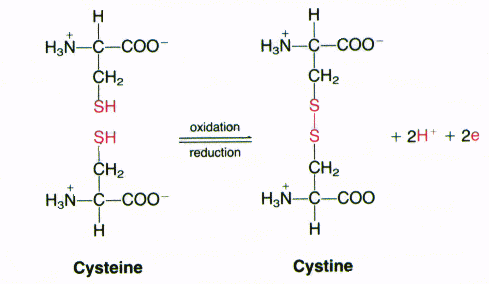
Predicting Oxidation States of Cysteines
When I returned from Boston, I reunited with John Mapes of the DMRL to extend our previous work with another original feature and to apply the research to a new problem. He came up with the idea for the Residue Adjacency Matrix (RAM), and we refined and implemented the idea together. The RAM matrix is an n by 20 matrix that describes the indicial difference between the cysteine and the n-nearest instances of each of the 20 common amino acids. We also created RAMmod, a related feature which uses the 3D Euclidean distance instead of sequential distance. We used RAM to predict cysteine oxidation. Again, we achieved record accuracy, with 70.3% accuracy compared to the previous best of 60.9% accuracy on the OSCTdb dataset. This work has been submitted to the Computational and Structural Biotechnology Journal.
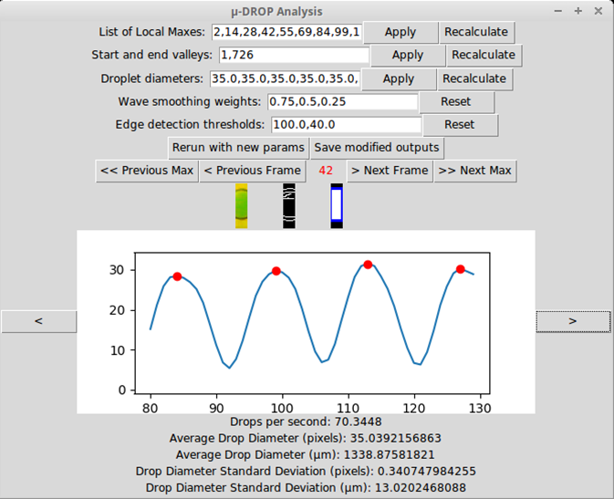
μ-DROP
I attended the BRITE (Bioinformatics Research and Interdisciplinary Training Experience) REU at Boston University during my sophmore summer in 2017. As part of this REU, I developed Micro Droplet Rate/Region Ocular Processor for the Densmore Lab. This program takes videos of microfluidic droplet generators and automatically calculates the droplet generation rate and the droplet diameters. By applying Canny's Edge detection algorithm to each frame and finding the average pixel value, the program can graph a sinusoidal wave. The program smooths this resulting wave and finds the period of it in order to calculate the droplet generation rate. A rectangle is fit to the frames that correspond to the local maxes of the wave. The length of these rectangles is taken as the diameter of the droplet. The paper incorporating this work is under review at Lab on a Chip.
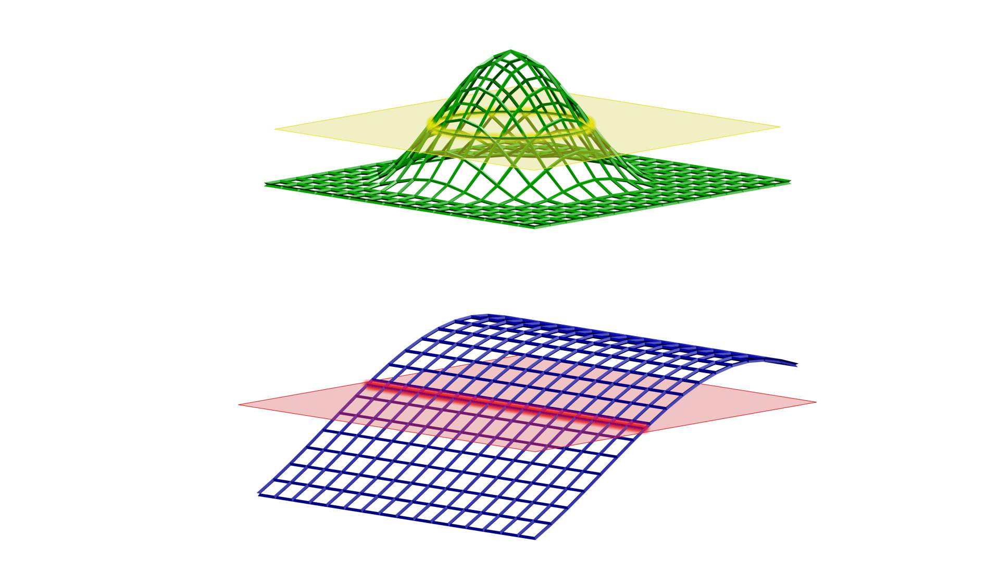
DAFD
For the second part of my REU at Boston University, I developed a program called DAFD (Design Automation based on Fluid Dynamics). This software suggests chip design parameters (such as flow rate, capillary number, etc.) to generate droplets at a user-specified rate and size. DAFD operates on a forward model that is built from the data collected from 𝜇-DROP. A model is built for each of our dependent variables (generation rate and size). To find a solution, we start the search at the experimental point which is closest to the desired values. Then, we use gradient descent to find the closest point on each of the two graphs such that the independent variables (the chip design parameters) satisfy both the generation rate and the droplet size. If no such pair of points exist, then we find a pair of points such that the difference between our desired values and the models’ predicted values are minimized. This tool will serve to make design of microfluidic droplet generators more efficient and accurate and will lay the pathway for future work on more microfluidic primitives.
Data Science Internship at Century Link
I had the opportunity to participate in a paid data science internship for CenturyLink during the spring of my junior year in 2018. During my work there, I attempted to connect several databases that existed in the CenturyLink Data Lake. When records from different databases are connected with each other, then the data becomes exponentially more powerful. For instance, if we had a database that contained customer information and a database that contained billing information that were not connected, then we would know where each customer was located and how much each customer was paying, but we would not know how much revenue each geographic region was providing for the company until we connected the databases. I developed several tools which would automatically search the databases and try to find connections to other databases in the Lake. These connections were then scored based on their likely strength and a graph was created that contained databases, tables, columns, and the links which connected them together.
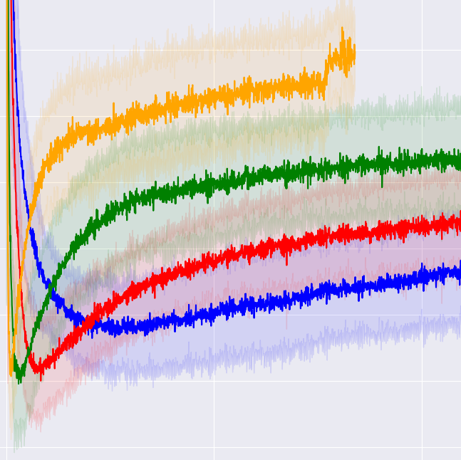
Dynamics of Robustness in Neural Networks
I participated in MSRP BIO (MIT's Summer Research Program in Biology) during my junior summer in 2018. During this REU, I worked in Dr. Tomaso Poggio's Lab in the McGovern Institute for Brain Research at MIT's Building 46. My project focused on understanding how and why robustness evolves in neural networks during their training regiments. "Robustness" is a measure of how resistant a neural network is to having its neurons ablated (activations clamped to zero). Like natural brains, neural networks can suffer loss of a certain amount of neurons without a dramatic detriment to function. Studying how robust a neural network is to neuron ablation is a good tool to understand how important any individual neuron is to the function of the whole network or, alternatively, the redundancy of neurons in the network. Previous research has focused on the robustness of fully-trained neural networks. By comparing the outputs of the network before and after neuron ablations at every training step, we get an estimate of the network’s robustness over time. We did several experiments in which we adjusted the architecture of the neural network, the type of data that we trained on, and the number of training examples we made the network fit. In all of our experiments, the network starts relatively robust, and then robustness dramatically decreases in the first few training steps. The network then recovers to a certain robustness which depends on various facets of the training regime such as the number of neurons in the network and the redundancy of the input data. The results that we obtained lead us to believe that robustness is related to both the data complexity and the effective capacity of the network.
Awards & Leadership

LA Tech IEEE President
I currently serve as the president for our local branch of the Institute of Electric and Electronic Engineers. I am constantly striving to get undergraduate students at LA Tech to become involved with Electrical Engineering and Computer Science. Our organization hosts educational competitions like the global IEEE XTREME Programming Competition and invites researchers and professionals to give presentations and network with students.
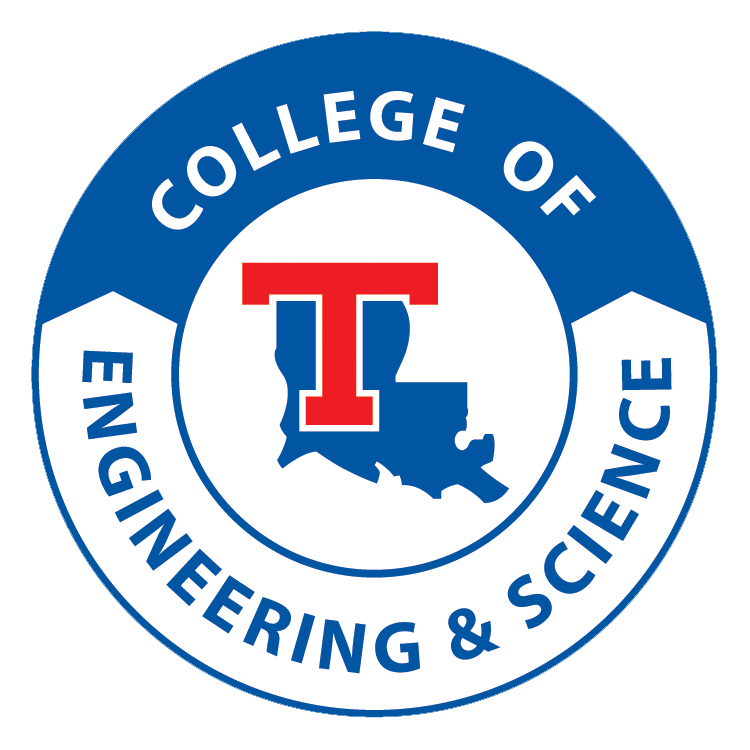
E&S Magazine Staff Writer
I write articles for the Engineering and Science Magazine at LA Tech. My article for the 2017 Winter edition discusses Generative Adversarial Networks and other forms of generative machine learning. My goal in writing for the E&S magazine is to expose our student body to more advanced concepts in Computer Science in an accessible and non-intimidating way.
VEX Robotics Captain
I currently serve as the team captain for the VEX Robotics team at Louisiana Tech. We design, build, and program a robot in order to compete in VEX sponsored competitions aroudn the country. The organization exists to provide hands-on experience to undergraduates who are interested in robotics and engineering.
Presidential Gold Service Award for NPS Service
I received the Presidential Gold Service Award for providing over 250 hours of volunteer service to the National Park Service. I have assisted the NPS with marsh grass planting on the South Louisiana coast, educational summer camps, fights against pollution, water quality testing, trail clearing after hurricanes, and clearing of non-native invasive plants from our bayous. I am strongly committed to preserving America's wetlands and ameliorating the effects of coastal erosion.
Oustanding Computational Biology Presentation at ABRCMS
I presented a poster presentation for my research at Boston University at ABRCMS (Annual Biomedical Research Conference for Minority Students) in Pheonix, Arizona. I received a $300 award for the presentation.
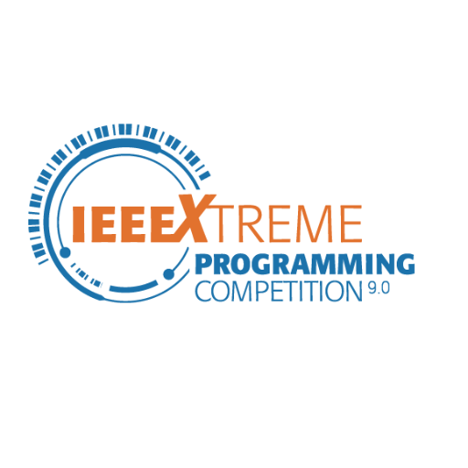
IEEE XTREME 24 Hour Programming Challenge: Top Ten in Nation
In addition to hosting the IEEE XTREME event at my school and giving tutorials to the other undergraduates on the types of problems they should expect, I also participated in the event with 2 other students. We made top ten in nation and top 200 globally (out of 3000+ teams).
Skills
Java
Python
C#
C++
R
PHP
Javascript
BASH/TCL
SQL
SLURM
Tensorflow
D3 Visualization
LaTeX
Classes
| Class |
Hours |
Grade |
| FUNDAMENTALS OF BIOLOGY I |
3HR |
A |
| BIOLOGICAL PRINCIPLES |
3HR |
A |
| BIOLOGICAL DIVERSITY |
3HR |
A |
| INTRO TO PROGRAMMING |
3HR |
A |
| INTERMEDIATE COMPUTER PROGRAMMING |
3HR |
A |
| DATA STRUCTURES |
3HR |
A |
| EMBEDDED SYSTEMS |
3HR |
A |
| OPERATING SYSTEMS |
3HR |
A |
| COMPUTER NETWORKS |
3HR |
A |
| COMPUTER NETWORK SECURITY |
3HR |
A |
| THEORY OF CYBER SCIENCE |
3HR |
A |
| ADV DATA STRUCTURES & ALGORITHMS |
3HR |
A |
| DISTRIBUTED & CLOUD COMPUTING |
3HR |
A |
| SOFTWARE DESIGN AND ENGINEERING |
3HR |
A |
| PRECALCULUS |
3HR |
A |
| HNRS CALCULUS I |
3HR |
A |
| CALCULUS II |
3HR |
A |
| CALCULUS III |
3HR |
A |
| CALCULUS IV |
3HR |
B |
| DIFFERENTIAL EQUATIONS |
3HR |
A |
| STATISTICAL METHODS |
3HR |
A |
| INTRO TO LINEAR ALGEBRA |
3HR |
A |
| DISCRETE MATH |
3HR |
A |
| HONORS ENGR PROBLEM SOLVING I |
2HR |
A |
| HONORS ENGR PROBLEM SOLVING II |
2HR |
A |
| HONORS ENGR PROBLEM SOLVING III |
2HR |
A |
| INTRO TO MICROPROCESSORS |
3HR |
A |
| STATICS & MECHANICS OF MATERIALS |
3HR |
A |
| ELECTRICAL ENGR & CIRCUITS I |
3HR |
A |
| THERMODYNAMICS |
3HR |
A |
| PHYSICS FOR ENGR AND SCI I |
3HR |
A |
| PHYSICS FOR ENGR AND SCI II |
3HR |
A |
| GENERAL PSYCHOLOGY |
3HR |
A |
| FOUND OF GEOGRAPHIC THOUGHT |
3HR |
A |
| WIRELESS & MOBILE SECURITY |
3HR |
A |
| COMP METH PHYS MODEL & SIMULA II |
3HR |
A |
| INTRODUCTION TO DIGITAL DESIGN |
3HR |
A |
| HISTORY OF THE MODERN NEAR EAST |
3HR |
A |
| HONORS UNIVERSITY SEMINAR |
1HR |
A |
| FRESHMAN COMPOSITION II |
3HR |
A |
| FOUNDATIONS OF MODERN CIVIL |
3HR |
A |
| HONORS TECHNICAL WRITING |
3HR |
A |